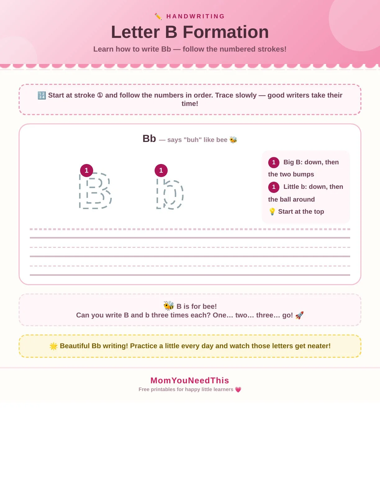

Letter B Formation Practice Trace And Write The Uppercase Letter B
Help your little learner practise forming the uppercase letter B with this fun, no-prep tracing printable. Big, clear letter guides make it easy for little hands.
🐻 Bear
⚽ Ball
🍌 Banana
Quick Answer
This free printable teaches preschoolers how to form the uppercase letter B with guided tracing rows that show where each stroke starts and which way it goes. Children trace the letter, then try it on their own — building the muscle memory that handwriting runs on, plus the /b/ sound connection with words like bear, ball and banana. Print at home with no signup needed.

✏️ Trace, Then Try On Your Own
Start with a finger: trace the big letter B in the air or on the table while you say how it goes. Then move to the worksheet — trace each B slowly, saying the letter name and its sound: “B says /b/, like bear.” Finish with the try-it-yourself row.
⬇️ Download Free Printable 🖨️ Print🎁 Free printable for toddlers & preschoolers
👆 Say It While You Trace
Say the letter name and its sound each time your child traces. Words like bear, ball and banana all begin with the B sound — naming them as the pencil moves ties the shape to the sound.
🎯 Keep It Short And Sweet
Three moves is a lot for small hands, and the second bump is usually where B practice wobbles. A few good rows beat a finished page of tired ones — stop while it is still fun, pick the neatest B together, and come back another day. B gets easier fast once the bumps behave.
🎨 Keep Exploring Free Letter Activities
More alphabet learning activities are added regularly for toddlers and preschoolers.
🎁 View All Free Resources✏️ How To Form The Letter B
Letter B is formed like this. Capital B takes three moves: pull straight down from the top line to the bottom, go back to the top and curve out and in for the first bump, then curve out and in again for the second bump. Small b is different — start at the top, pull straight down, then bounce back up and around to draw the bump at the bottom: the line comes before the bump, which is exactly how it differs from d.
Sound and shape travel together on this page: every row your child traces is a chance to pop the /b/ sound — b-b-bear. Letters learned as a movement plus a sound are remembered far better than letters learned as pictures to copy.
The mistake to watch for on this page is a B with bumps that float off the line — both bumps should hug the straight stroke. The other classic is a lowercase b drawn backwards, which turns it into a d.
🖨️ How to Use This Printable
Get started in minutes — everything here is free and made for busy parents.
- Download the printable. Tap the download button to save the free Free Letter B Formation Practice file to your device.
- Print it out. Use any home printer and regular paper — cardstock works great for pages little hands will use again and again. The print button opens the full-size page in a new tab if you prefer to print from there.
- Learn together. Sit with your child and say the strokes out loud as they trace the letter B — talking through the moves is what turns copying into memory. Short sessions work best.
- Explore more. Check the free printables linked below for your next activity.
❓ Free Letter B Formation Practice FAQs
Is this Free Letter B Formation Practice printable free?
Yes — every printable on MomYouNeedThis is 100% free to download and print. No signup, no payment, just tap the download button and print the B formation page as often as your child wants more practice.
How do I use this letter b printable?
Print the page and trace together: say the letter B's name, talk through its strokes, and trace slowly before trying the independent row. Short, playful sessions work better than long lessons for little learners.
What literacy skills does this practice?
Letter formation, pencil control, and letter-sound knowledge. Formation practice teaches the letter B as a set of movements, not just a picture — which is what lets children later write it from memory. Paired with its /b/ sound in words like bear, ball and banana, it covers the core pre-writing skills that prepare children for school handwriting.
🔗 More Free Printables You’ll Love
Pair this printable with more free learning activities from the MomYouNeedThis library.
- ✏️ Free Letter C Formation PracticeFree printable letter c formation practice for little learners.
- 🎨 Free Letter B Coloring PageFree printable letter b coloring page for little learners.
- ✏️ Free Uppercase Letter B TracingFree printable uppercase letter b tracing for little learners.
- ✏️ Free Lowercase Letter B TracingFree printable lowercase letter b tracing for little learners.